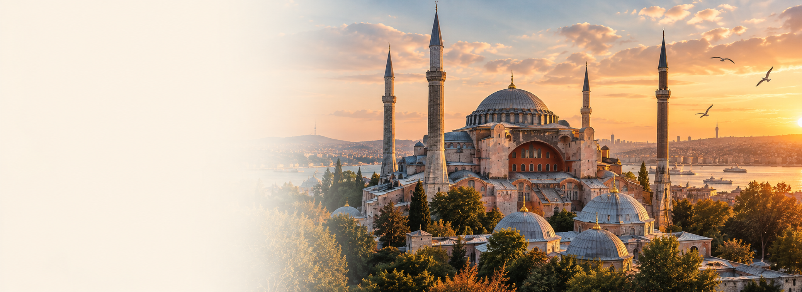
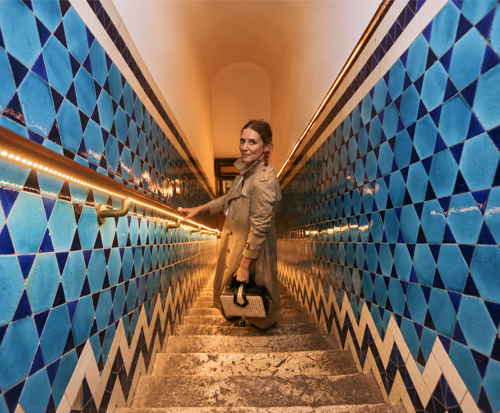
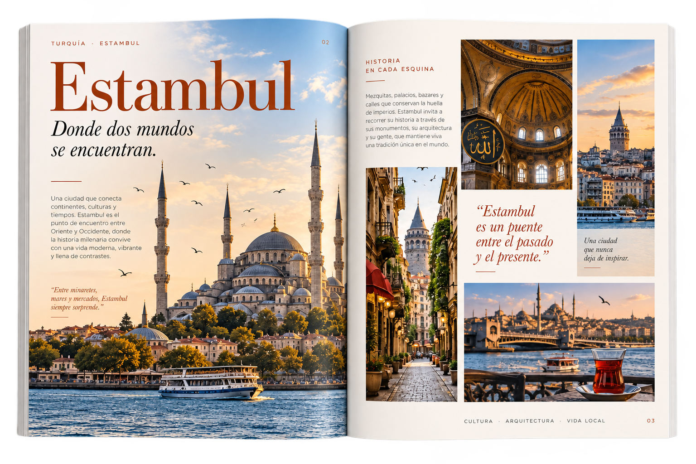
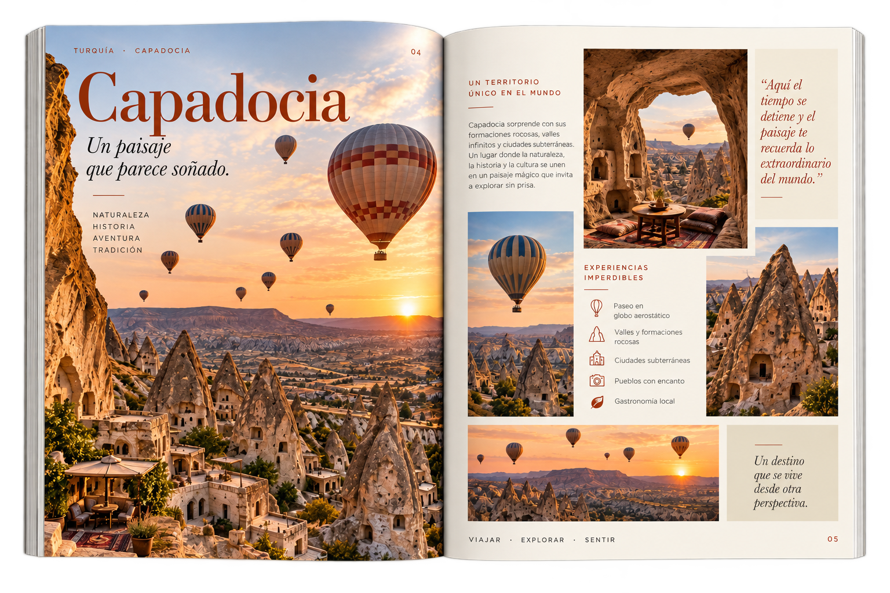

Retícula
Una estructura modular permite distribuir fotografías, textos y elementos informativos manteniendo equilibrio y ritmo.

Diseño editorial · Dirección de arte
Donde Oriente y Occidente se encuentran.
Una guía editorial inspirada...
El concepto
01 · La idea
La revista Turquía nace como un proyecto editorial inspirado en la riqueza cultural y visual de este país único.
Desde Estambul hasta Capadocia, cada página busca capturar la esencia de un lugar que entrelaza Oriente, tradición y modernidad.
La propuesta organiza el contenido mediante una composición editorial que combina fotografía, tipografía, color y bloques informativos.

02 · Universo visual
La dirección visual toma como referencia elementos culturales, arquitectónicos, ornamentales y cromáticos asociados a Turquía.


03 · Sistema editorial
La propuesta editorial utiliza retículas, jerarquías tipográficas y recursos gráficos para organizar la información y construir diferentes niveles de lectura.
Una estructura modular permite distribuir fotografías, textos y elementos informativos manteniendo equilibrio y ritmo.
Títulos, subtítulos y cuerpos de texto construyen diferentes niveles de lectura dentro de cada página.
La fotografía adquiere protagonismo y funciona como elemento narrativo dentro de la composición.
Tipografía principal
Libre Bodoni · Montserrat
04 · Diseño editorial
Aplicación del sistema editorial en las distintas páginas y contenidos de la revista.

Portada · Nº 01 · 2024
La portada reúne los elementos centrales del sistema: una fotografía de gran formato, el logotipo en Libre Bodoni y un sello circular que acompaña la identidad de la revista.




05 · Adaptación digital
La propuesta editorial también puede trasladarse a un formato digital, manteniendo la jerarquía visual y la narrativa del proyecto.


06 · Aplicación física
La aplicación física permite llevar el sistema editorial al objeto impreso y reforzar la experiencia de lectura.


07 · Resultado final
El resultado reúne contenido, fotografía, tipografía y recursos gráficos en una propuesta editorial pensada para comunicar y conectar al lector con la esencia de Turquía.